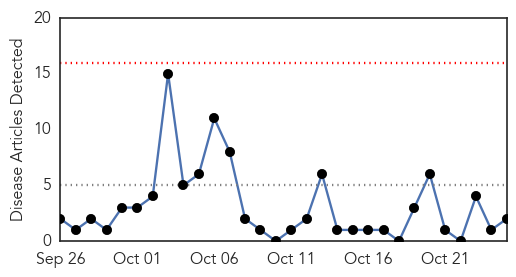
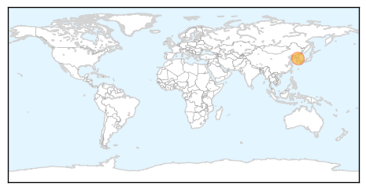

Meningitis
30-Day Web Trend
0 alerts, 0 warnings

30-Day Twitter Trend
5 alerts, 0 warnings

Article Locations

Article Confidences

Top Articles:
-
No articles found for Oct 25, 2015
Top Tweets:
- 0.940
- Scottish nurse recuperating after EVD complications cause meningitis - https://t.co/rLEq4WyXUE ebola
MERS
30-Day Web Trend
0 alerts, 0 warnings

30-Day Twitter Trend
1 alerts, 0 warnings
Article Locations
Article Confidences

Top Articles:
Top Tweets:
- 0.656
- AFD blog `@WHO Update On Korea’s Re-hospitalized MERS Case' MERS-CoV https://t.co/EWkfV6IrVl
- 0.571
- AFD Blog `South Korean: Former MERS Patient Dies Of Complications' MERS-CoV https://t.co/rNrzg2cfSv
- 0.513
- AFD Blog `Superspreaders & The Korean MERS Epidemiological Report' MERS-CoV https://t.co/6JR1l1eOSJ